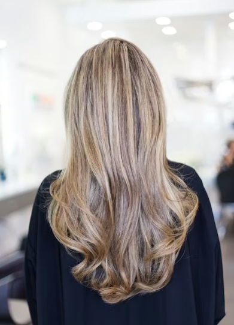
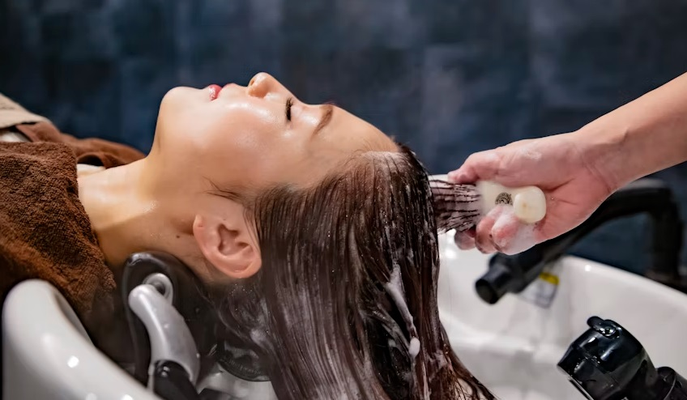
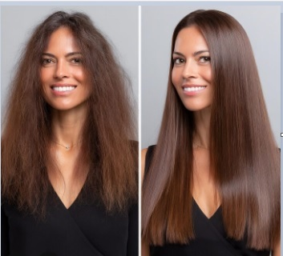

Atendimento Exclusivo
Experiência personalizada para valorizar sua identidade, seu estilo e sua autoestima.
Atendimento personalizado em corte feminino, escova, hidratação, colorimetria, penteados, maquiagem profissional e escova progressiva sem formol. Atendimento de segunda a sábado, das 09h às 18h, na Rua Padre Estêvão Pernet, 312 — Tatuapé.
Atendimento humanizado, técnicas modernas e foco total na saúde, beleza e autoestima de cada cliente.
Experiência personalizada para valorizar sua identidade, seu estilo e sua autoestima.
Produtos profissionais de alta performance para brilho, recuperação, proteção e acabamento sofisticado.
Procedimentos atualizados com foco em resultado natural, segurança, elegância e saúde dos fios.
Corte feminino, escova, hidratação capilar, colorimetria, penteados, maquiagem profissional e escova progressiva sem formol com atendimento personalizado no Tatuapé.

Cortes personalizados alinhados ao seu estilo, formato do rosto e rotina.

Movimento natural, brilho intenso e acabamento sofisticado para o dia a dia ou ocasiões especiais.

Tratamento para recuperação dos fios, com foco em brilho, maciez, alinhamento e cuidado capilar.

Redução de volume com acabamento elegante, brilho duradouro e atenção à saúde dos fios.
Profissional da beleza com mais de 20 anos de experiência, atendimento personalizado e olhar técnico para valorizar cada cliente.
A Monica é profissional da beleza com mais de 20 anos de experiência, formada pelo Instituto L'Oréal de Treinamento Profissional. Sua trajetória é marcada por atendimento personalizado, escuta atenta e cuidado com a autoestima de cada cliente.
Possui experiência em colorimetria, corte feminino, penteados, escova profissional, escova progressiva sem formol, hidratação capilar e maquiagem profissional.
Antes de cada procedimento, realiza uma análise cuidadosa dos cabelos para indicar o serviço mais adequado ao estilo, rotina e necessidade de cada cliente.
Cuidado, técnica e excelência em cada detalhe para realçar sua beleza com naturalidade.
“Atendimento impecável e resultado maravilhoso. Meu cabelo ficou incrível.”
Juliana S.“Experiência sofisticada e atendimento extremamente cuidadoso.”
Camila R.“Profissional excelente. Ambiente leve, elegante e muito acolhedor.”
Fernanda M.Atendimento na Rua Padre Estêvão Pernet, 312 — Tatuapé, São Paulo — SP, com fácil acesso para clientes do Carrão, Belém, Vila Carrão, Jardim Anália Franco e região da Zona Leste.
Endereço:
Rua Padre Estêvão Pernet, 312 — Tatuapé
São Paulo — SP
Horário de atendimento:
Segunda a sábado, das 09h às 18h
Região:
Tatuapé • Carrão • Belém • Vila Carrão • Jardim Anália Franco • Zona Leste
Atendimento de segunda a sábado, das 09h às 18h, na Rua Padre Estêvão Pernet, 312 — Tatuapé.
Agendar atendimento pelo WhatsAppSim. A Monica Hair oferece atendimento personalizado no Tatuapé, com serviços de corte feminino, escova, hidratação capilar, colorimetria, penteados, maquiagem profissional e escova progressiva sem formol.
A Monica Hair fica na Rua Padre Estêvão Pernet, 312 — Tatuapé, São Paulo — SP, com fácil acesso para Carrão, Belém, Vila Carrão e Jardim Anália Franco.
O atendimento é realizado de segunda a sábado, das 09h às 18h, mediante agendamento pelo WhatsApp.
Corte feminino, escova, hidratação capilar, colorimetria, penteados, maquiagem profissional e escova progressiva sem formol.
Sim. A localização no Tatuapé facilita o acesso para clientes do Carrão, Belém, Vila Carrão, Jardim Anália Franco e região da Zona Leste de São Paulo.
O agendamento pode ser feito diretamente pelo WhatsApp, clicando nos botões de atendimento disponíveis na página.
Pix, cartão de crédito, débito e dinheiro.
Preencha seus dados, escolha o procedimento desejado e envie sua solicitação de agendamento. Em breve entraremos em contato para confirmar o melhor horário para você.